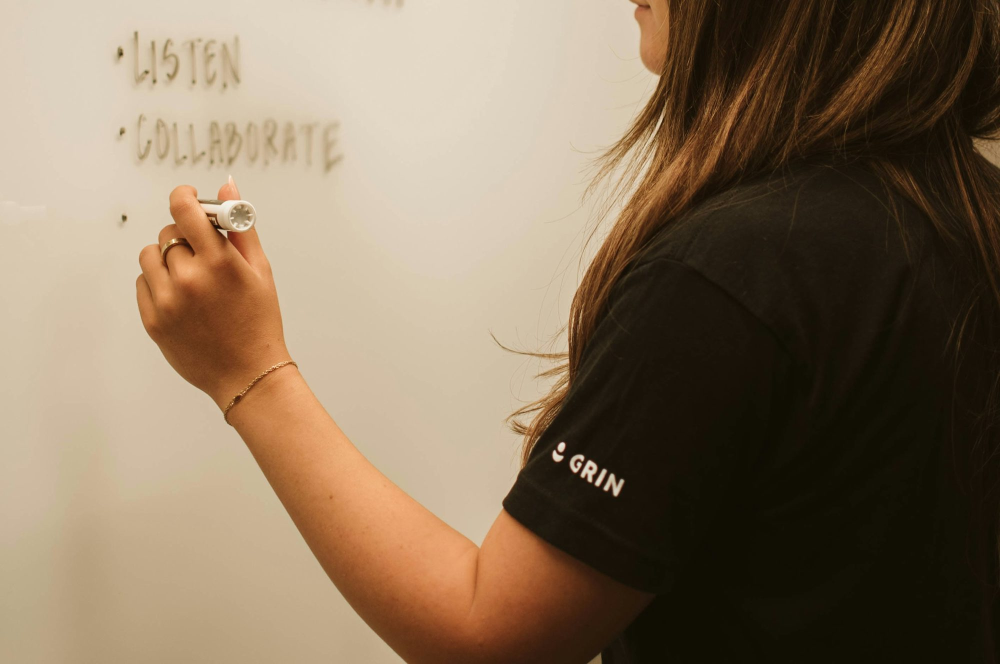

lernova.xyz
An Knowledge exploration of how Examination Certification Research Curriculum technology is transforming Literacy Training education, enhancing Study learning experiences, Academic Learning and preparing students Teaching Innovation Writing for Skills the Reading future.In today's fast-paced digital age, technology has become an integral part of our daily lives, profoundly influencing various sectors, including education. The incorporation of technology into educational practices has not only transformed how knowledge is delivered but also how students engage with that knowledge. This article delves into the multifaceted role of technology in education, examining its benefits, challenges, and the future of learning. One of the most significant advantages of technology in education is its ability to enhance accessibility. Online learning platforms and resources enable students from diverse backgrounds to access quality education regardless of geographical constraints. With the advent of e-learning, students can participate in courses offered by prestigious institutions worldwide, often at a fraction of the Examination cost. For instance, platforms like Coursera and edX provide free or low-cost courses from renowned universities, allowing learners to explore subjects at their own pace. This democratization of education opens doors for individuals who may have previously faced barriers to traditional learning environments. Furthermore, technology fosters personalized learning experiences. Adaptive learning software can tailor educational content to meet the unique needs and preferences of each student, promoting a more effective learning process. For example, platforms like Khan Academy utilize algorithms to assess a student's understanding of various concepts, offering customized exercises and resources to strengthen areas of weakness. This individualized approach encourages students to take ownership of their learning, enhancing motivation and engagement. In addition to accessibility and personalization, technology enriches the classroom experience through interactive tools and multimedia resources. Educators can utilize video lectures, simulations, and educational games to create dynamic and immersive learning environments. For instance, virtual reality (VR) can transport students to historical sites or allow them to conduct scientific experiments in a controlled virtual space, providing experiences that would be impossible in a traditional classroom. These engaging tools not only captivate students' attention but also foster deeper understanding and retention of information. Moreover, technology facilitates collaboration among students, transcending physical Literacy boundaries. Online discussion forums, collaborative documents, and group projects enable learners to connect and collaborate with peers from around the world. This exposure to diverse perspectives enhances critical thinking and prepares students for the collaborative nature of the modern workforce. For example, platforms like Google Workspace allow students to work together on projects in real time, regardless of their locations. However, while the benefits of technology in education are undeniable, challenges also exist. One major concern is the digital divide, which refers to the gap between individuals with access to technology and those without. Socioeconomic factors can create disparities in access to devices and high-speed internet, hindering the ability of some students to benefit from digital learning opportunities. Educational institutions must strive to address this divide by providing resources and support to underserved communities. Additionally, the overreliance on technology can lead to potential drawbacks. While digital tools offer numerous advantages, excessive screen time can contribute to attention issues and hinder face-to-face social interactions. Educators must strike a balance between technology use and traditional teaching methods, ensuring that students develop essential social skills and maintain a healthy relationship with digital devices. Furthermore, data privacy and security are pressing concerns as educational technology becomes more prevalent. Schools and institutions must implement robust policies to protect students' personal information and ensure that digital platforms comply with privacy regulations. As technology continues to evolve, educators and policymakers must remain vigilant in safeguarding student data while fostering an environment that encourages innovation. Looking to the future, the role of technology in education is poised to expand further. Artificial intelligence (AI) and machine learning are increasingly being integrated into educational tools, providing valuable insights into student performance and learning patterns. AI-driven platforms can analyze data to identify trends, allowing educators to make informed decisions about curriculum design and instructional strategies. This data-driven approach enhances the overall quality of education and ensures that students receive the support they need to succeed. Additionally, the rise of blended learning models—combining traditional classroom instruction with online learning—promises to reshape educational practices. By merging face-to-face interactions with digital resources, educators can create a more flexible and engaging learning environment that caters to diverse learning styles. This hybrid approach empowers students to learn at their own pace while benefiting from direct interaction with teachers and peers. In conclusion, technology has revolutionized education, offering unprecedented opportunities for accessibility, personalization, and engagement. While challenges such as the digital divide and data privacy must be addressed, the future of learning looks promising. By harnessing the power of technology, educators can create dynamic and inclusive educational experiences that prepare students for success in an increasingly interconnected world. As we embrace this new era of learning, it is crucial to prioritize the development of essential skills and competencies that Innovation will enable students to navigate the complexities of the future.
Saturday, November 23rd 2024
Sophia Liu